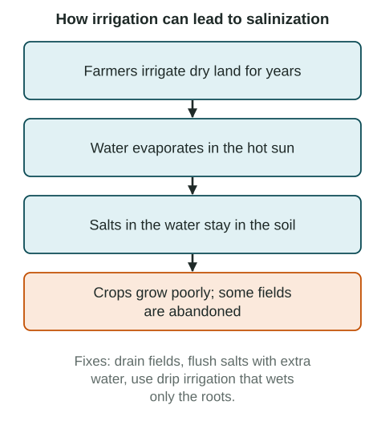

From space, you can see farming's mark on Earth: green circles on the dry plains of Kansas, brown patches cut into the Amazon rainforest, and a dry seabed where Central Asia's Aral Sea used to be. Farming feeds billions of people, and it changes the land, water and societies around it.
Practices that change the landscape
Many farming practices reshape the land. Some you have met already.
- Slash and burn (shifting cultivation) clears and burns forest plots. With long rests it can be sustainable; repeated over large areas with short rests, it adds to forest loss.
- Deforestation is the clearing of forest, often for farms or pasture. In the Amazon basin of Brazil, cattle ranching and soybean farming are leading causes.
- Terracing cuts a slope into flat steps so it can be farmed. The rice terraces of the Ifugao people in the Philippines and terraced fields in Peru and Nepal hold soil and water in place.
- Irrigation brings water to dry land, from the canals of Egypt's Nile valley to the circles of pivot sprinklers over the Ogallala Aquifer in the US Great Plains.
- Draining wetlands creates farmland. Large parts of Florida's Everglades were drained in the 1900s for sugarcane and vegetables, and the Netherlands has turned shallow sea and marsh into farmland for centuries.
- Pastoral nomadism (nomadic herding) moves animals across dry grasslands. Where herds are kept in one area too long, grass can be overgrazed.
Environmental effects
Pollution. Fertilizer and manure washed off farms carry nutrients into rivers. Water from farms across the Mississippi River basin feeds algae blooms in the Gulf of Mexico (called the Gulf of America by the US federal government since 2025). When the algae die and decay, oxygen falls, creating a "dead zone" each summer where fish and shrimp cannot live. Pesticides can harm wildlife and farm workers.
Salinization is the buildup of salt in soil. Irrigation water carries small amounts of dissolved salt. In hot, dry places, the water evaporates and the salt stays. After years, crops grow poorly and fields may be abandoned.

The Aral Sea shows several effects at once. From the 1960s, Soviet planners diverted the rivers that fed it to irrigate cotton in what are now Uzbekistan and Kazakhstan. The sea shrank and split, fishing towns were stranded, salty dust blew from the dry bed onto fields, and many fields became salty. In 2005 Kazakhstan finished a dam that helped the northern part of the sea recover (UNEP and NASA reports).
Desertification is the degrading of dry land until it can support far fewer plants, animals and people. In the Sahel, south of the Sahara, drought, overgrazing and clearing for fields have all been blamed. Scientists debate how much each matters, and parts of the Sahel have become greener since the droughts of the 1970s and 1980s.
Land cover change. Turning forest, grassland and wetland into farmland reduces habitat and the variety of species.
Conservation
Farmers and governments also work to protect land. Conservation practices include terracing and contour plowing (plowing across a slope, not up and down it), no-till farming (leaving crop stalks on fields), cover crops planted between harvests, windbreaks of trees, drip irrigation, and setting aside fragile land. In the United States, the Conservation Reserve Program has paid farmers to take erodible land out of crops since 1985.
Societal effects
| Effect | Example |
|---|---|
| Changing diets | As incomes rose in China, people ate more pork and poultry, raising demand for feed such as soybeans grown in Brazil |
| Economic purpose | A subsistence farm in Malawi grows maize to eat; a commercial farm in Iowa grows corn to sell, and each uses land differently |
| Who does the work | The roles of women and men in farming vary by place and type of farming (the last topic of this unit) |
Every practice has positive and negative effects. Irrigation feeds millions in Egypt and India and also risks salt and falling water tables. Terracing makes steep land productive and also protects it. A strong answer names the practice, the place and the effect, and links them.